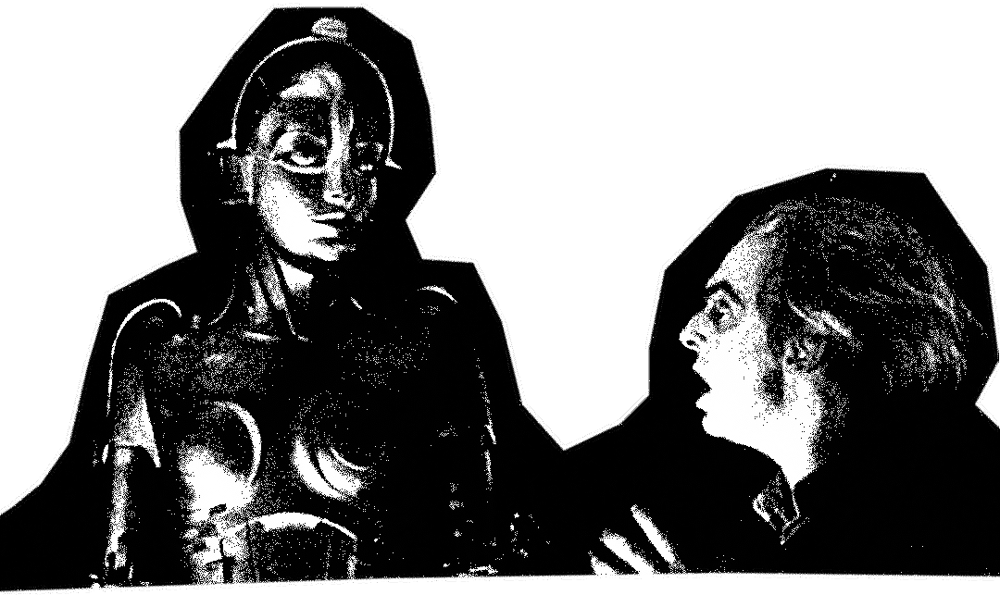

In Jorge Luis Borges short story The Library of Babel, humanity exists in an expansive library composed of hexagonal shelves containing every possible combination of 25 characters. Everything that has been or will be known, every record of the past or prediction of the future, every truth and every lie, hides itself in an overwhelming sea of gibberish. The Librarians within live and die by their obsession with the library's hidden knowledge. Some are anthropological, scientific, many more take to religious fanaticism. We haul around our own little libraries through our computers. The human relationship with technology has evolved in unprecedented ways. Our computers no longer act as tools, but have engulfed our consciousness and society, seeming to contain knowledge as infinite and incomprehensible as Borges’ library. In order to dissect our current relationship, we must both retrace our steps and interrogate our trajectory.
The human fascination with tools and machinery is ancient. We have evolved alongside our tools. As presented in Gods and Robots by Adrienne Mayor, the Greeks defined humanity from other animals through our use of tools:
By allowing us to conceptualize life beyond survival, tools have allowed humans to dream, innovate, and build. Tools have formed the basis of our societies, mythologies, and collective memories. Through our tools, we are connected to each human that has come before us, a special form of external knowledge left to us by our ancestors. The exponential progress of human history has been defined by technological eras, and with each new advancement a new struggle has formed.
The struggle over technology has often been wrapped in the issue of class. From the Luddites of the 19th century, the question of who benefits from the adoption of new technology continues to be posed in this new, techno-capitalist age. New classes have emerged, that of the user and the programmer. Researcher Paul N. Edwards said computers contain:
Technocrats act as monarchs over their digital microworlds, and their reach only grows as the digital becomes further enmeshed with the physical. In this new realm of techno-capitalism, programmers have a vested interest in making their technology as opaque as possible. “User-friendly” interfaces quickly bleed into ethically hostile territory–users consume digital products with increasing ease, while their knowledge of their underlying functions deteriorates. We, users, operate computers through systems shaped by the biases and interests of programmers. When we interface with these machines, we cannot simply accept their existence as neutral, but rather need to interrogate why they function in the manner they do–the presumed problems they aim to solve, and the tangible impact of their attempts.
Beyond accelerating the steady flow of capital, these technocrats are interested in reshaping our culture. Returning to the Library of Babel, Borges’ narrator describes the library in divine terms:
Technocrats dream of a world that goes beyond even the ancient conceptions of machines and divinity. They dream of a world where machines assume the role of Borges library, where they will be perceived as overwhelming in their depth and perfection, where programmers assume a priestly-caste as their conduits. The line between digital and human consciousness continues to blur as users begin to doubt their capacity for thought in the face of computational cognition. Online communities form around ideas of “algorithmic divination”, with the belief that they can access or command deities through social media platforms. AI chatbots hasten this process, and cases of AI induced psychosis have begun to make headlines. Machines, crafted and puppeted by technocrats dedicated to cementing their ubiquity, have captured our minds and encroached on our reasoning and sanity.
